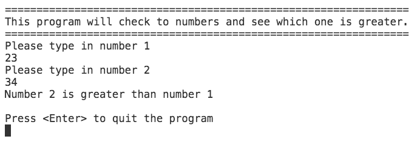
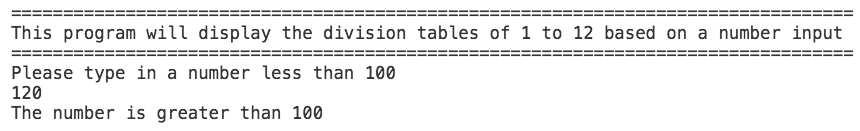
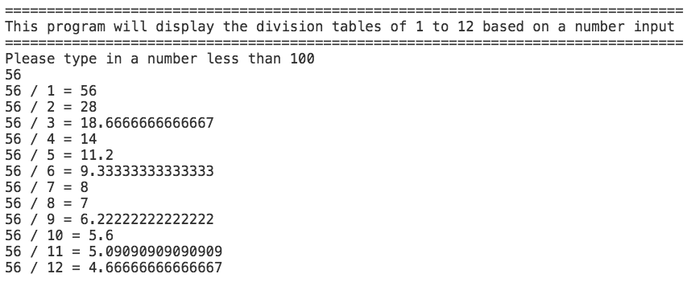

| Assessment | Type of Assessment | Due | Marks | Weighting |
|---|---|---|---|---|
| Test #1 | Practical programming test | 4 September 2017, 10:10am - 12:00pm | 100 Marks | 30% |
| Learning outcomes Assessed: | ||||
| 1. Apply programming concepts and tools to system management tasks | ||||
| 4. Demonstrate programming using core logic and mathematical concepts such as problem solving methods, critical thinking, abstract reasoning; and systems thinking. | ||||
You have 105 minutes to complete this test.
This test is an individual practical test to be completed in class using Microsoft Visual Studio Code.
Please clarify any aspect of the test of which you are unsure of with your lecturer.
You are required to create 4 repositories on Github and submit the links to those 4 repositories on Moodle.
For each problem you are required to create a flow diagram and add the relevant pseudocode.
The names for the repositories should be in the follow format:
<student-id>-Task-Langauge
For example:
9980349-problem01-csharp
or
9980349-problem01-js
NOTE: This assessment contributes to 30% to your overall grade in COMP.5202
Write a C# and Javascript program that compares 2 numbers by user input.
You will need to show the user if the number isbigger,equal toorsmallerthan each other
if / else statement to workout what needs to be displayed to the userExample Answer

Make sure you include the following:
Write a C# and Javascript program that divides a number less than 100 by 12 and shows each division from 1 to 12
Use a loop to achieve this.
Example Answer 01

Example Answer 02

Make sure you include the following:
console (do not use alert())